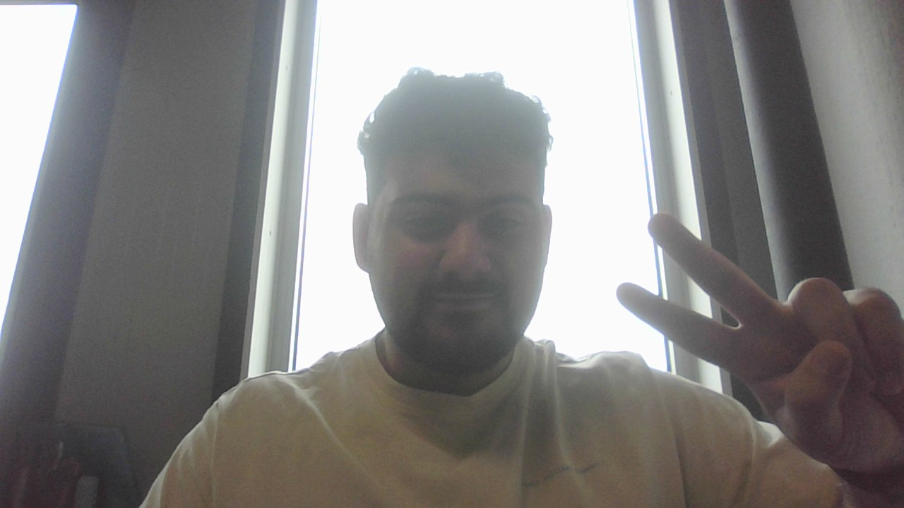
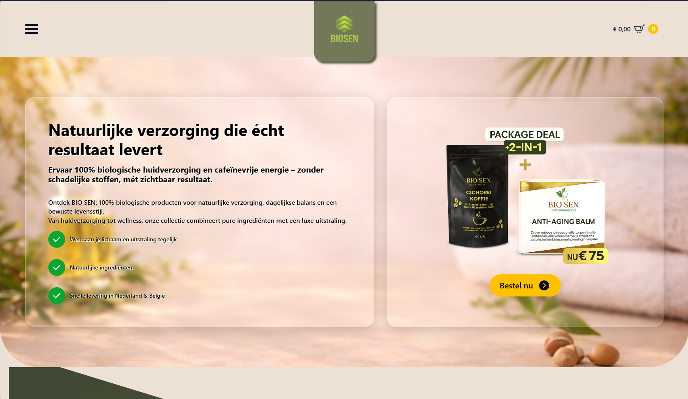
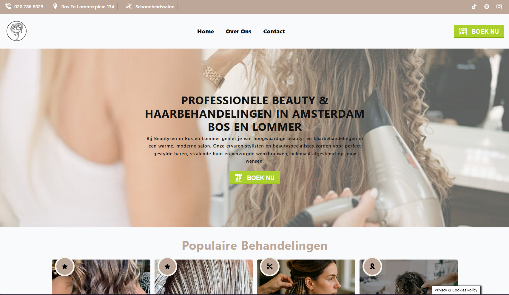
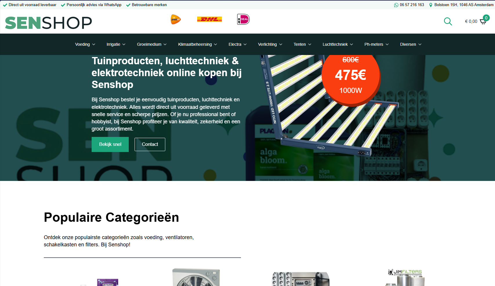
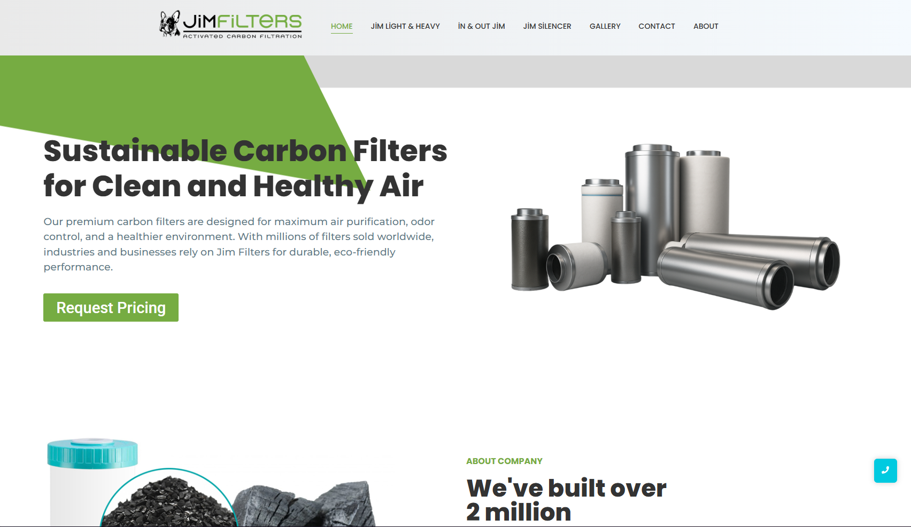

Aantal Projecten
3

Wordpress expert
Rijbewijzen
AM - A1 - B
Hallo, ik ben Umut Sen. Ik ben webdeveloper, MBO 4-student Software Development en eigenaar van webshop Biosen.nl. Mijn focus ligt op het bouwen van kwalitatieve, conversiegerichte applicaties met React, Laravel en WordPress.

AM - A1 - B
Ik ben een gedreven webdeveloper en MBO 4-student Software Development met een sterke focus op kwaliteit en resultaat. Met ervaring in React, Laravel en WordPress bouw ik robuuste applicaties, waarbij ik veel aandacht besteed aan software testing (QA) om de beste werking te garanderen. Als eigenaar van webshop Biosen.nl pas ik mijn technische kennis direct toe in de praktijk, gecombineerd met SEO en conversie-optimalisatie. Ik ben oplossingsgericht, commercieel ingesteld en altijd op zoek naar de optimale technische oplossing. Kort profiel: Specialisaties: Full-stack Development, Software Testing (QA), E-commerce (SEO/CRO). Tech Stack: React, Laravel, WordPress (o.a. Breakdance builder). Praktisch: In het bezit van rijbewijs A1 en B.
Ik de trotse eigenaar van Biosen.nl, een B2C-webshop gericht op de directe consumentenverkoop van beauty- en wellnessproducten. Het platform is op dit moment nog volop in ontwikkeling (work in progress). Achter de schermen werk ik hard aan de technische realisatie, het design en de content. Hierbij zet ik mijn kennis van SEO en conversie-optimalisatie (CRO) direct in de praktijk om een vlekkeloze, razendsnelle gebruikerservaring voor de consument te bouwen. Biosen.nl is voor mij hét project waar mijn passie voor webdevelopment en e-commerce perfect samenkomen.

Voor de Amsterdamse schoonheidssalon BeautySen (gevestigd aan het Bos en Lommerplein) heb ik de website ontwikkeld. Het doel was om een overzichtelijk en klantvriendelijk platform te creëren waar bezoekers direct informatie kunnen vinden en laagdrempelig contact kunnen opnemen via WhatsApp of e-mail. De focus lag op een strak design en een naadloze gebruikerservaring die past bij de rustgevende uitstraling van de salon. Laat maar weten of je deze teksten wilt gebruiken voor op de website zelf, of juist als projectomschrijving voor in jouw eigen webdeveloper-portfolio!

Senshop.nl is een uitgebreide online growshop gespecialiseerd in tuinproducten, kweekbenodigdheden, luchttechniek en elektrotechniek. Voor dit project heb ik de technische opbouw en optimalisatie verzorgd. De webshop is volledig gebouwd in WordPress met behulp van de Breakdance builder. Mijn focus lag sterk op het bouwen van een solide on-page SEO-structuur om de organische vindbaarheid te maximaliseren. Daarnaast heb ik het gehele bestelproces grondig getest en geoptimaliseerd op gebruiksvriendelijkheid (UX), zodat zowel hobbyisten als professionals snel en frictieloos hun producten kunnen bestellen.

Voor het merk Jim Filters heb ik de officiële merkwebsite, Jimfilters.com, ontwikkeld. Jim Filters is een gerenommeerd merk dat gespecialiseerd is in hoogwaardige koolstoffilters voor efficiënte luchtzuivering en geurverwijdering in de klimaat- en kweektechniek. Het doel van deze website was om het productaanbod—zoals de robuuste Heavy Filters en de lichtgewicht Lite Filters—digitaal sterk en overzichtelijk te presenteren. Ik heb de site gebouwd met een sterke focus op een strakke, industriële uitstraling, snelle laadtijden en een optimale gebruikerservaring. Daarnaast is de technische structuur volledig geoptimaliseerd voor SEO, zodat het merk goed vindbaar is voor zowel B2B-partners als eindgebruikers.
